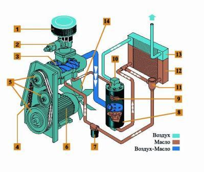

Назначение и устройство дизельного компрессора
Назначение и область применения

Дизельные передвижные компрессоры - это целый класс оборудования, широко применяемого при выполнении самого разнообразного спектра работ. В настоящее время сложно представить себе строительный объект, где бы данный вид оборудования не нашёл себе применения. Чаще всего дизельные компрессоры используются на дорожных и строительных работах, обеспечивая сжатым воздухом отбойные молотки. Также дизельные передвижные компрессоры незаменимы при продувке и опрессовке различных трубопроводов, для работы пескоструйных аппаратов, а также для устройств бестраншейной прокладки труб (пневмопробойников). Дизельные компрессоры также способны выступать в роли резервного источника воздухообеспечения предприятия. Будучи независимыми от электричества и обладая высочайшей мобильностью, они могут быть доставлены к потребителю и приведены в рабочее состояние в кратчайшие сроки.
Основы устройства и принцип работы винтового компрессора
В настоящее время встречаются дизельные компрессоры с компрессорными блоками двух типов: поршневым или
винтовым, но так как наибольшее распространение в последнее время получили передвижные компрессоры с
винтовым блоком по причинам, о которых будет сказано ниже, мы подробнее остановимся именно на этот типе
компрессоров.
Винтовые компрессоры относятся к типу объемных компрессоров. Принцип работы большинства винтовых
компрессоров следующий. Винтовой компрессор всасывает атмосферный воздух через воздушный фильтр (1) со
сменным фильтрующим элементом. Далее очищенный воздух проходит через многофункциональный регулятор
всасывания (2) и попадает в винтовой блок (3), являющийся «сердцем» компрессора. Здесь воздух сжимается
и перемешивается с маслом, впрыскиваемым в блок в точно дозированных количествах. Образовавшаяся
воздушно-масляная смесь нагнетается в сепаратор (8), где при прохождении смеси через картридж (9)
происходит разделение масла и воздуха. Очищенный от масла воздух проходит через воздушный радиатор (13)
и поступает на выход из компрессора. Масло, отделяемое в сепараторе, возвращается обратно в винтовой
блок. В зависимости от температуры масло проходит либо по малому кругу, либо по большому кругу через
масляный радиатор (12). Управляет движением масла клапан термостата (11). Перед впрыском в винтовой блок
масло предварительно проходит через масляный фильтр (7), где происходит его очистка от твердых частиц.
Привод винтовой пары осуществляется двигателем (электрическим или ДВС) (6), посредством клиноременной
передачи или муфты (4). Передаточное отношение клиноременной передачи, а, следовательно, и скорость
вращения винтового блока задается размерами шкивом (5). Вентилятор (14), установленный на валу
электродвигателя, обеспечивает движение внутри компрессора охлаждающего воздушного потока, который
направляется на воздушно-масляный радиатор для отвода тепла, образующегося при сжатии воздуха. Работу
компрессора в режиме холостого хода обеспечивает клапан минимального давления (10). Одновременно он же
играет роль обратного клапана, отделяя компрессор от пневматической магистрали при его остановке или
работе на холостом ходу.

"Сердцем" винтового компрессора является винтовой блок. Он состоит из двух червячных роторов, находящихся в зацеплении. Один из роторов – ведущий, другой – ведомый. Процесс сжатия происходит следующим образом. Зубья ведущего и ведомого роторов находятся в зацеплении, а их открытые полости и корпус винтового блока образуют объем, куда при вращении роторов, благодаря разряжению, поступает воздух. Роторы вращаются в противоположных направлениях, открытые полости закрываются, объем между ними уменьшается, а давление нагнетания растет. При достижении необходимого давления сжатый воздух поступает в нагнетательный патрубок. Полный цикл сжатия осуществляется за один оборот ведущего ротора. Такой процесс сжатия существенно отличается от сжатия в поршневом компрессоре, где происходит возвратно-поступательное движение поршня в цилиндре.
Преимущества винтового компрессора
Условно можно определить 3 основных преимущества винтового компрессора перед поршневым:
- Низкий уровень вибрации, и вместе с ней меньшие показатели шума, издаваемые винтовыми компрессорами, а также сравнительно небольшая масса и компактные габариты винтового компрессора.
- Превосходная надежность и долговечность винтовых блоков, которые способны работать до 40000 часов без капитального ремонта.
- Низкие эксплутационные затраты на содержание винтовых блоков, которые в тандеме с дизельными двигателями нового поколения с пониженным уровнем потребления топлива (~30% ) позволяют существенно сократить затраты на содержание и эксплуатацию винтового дизельного компрессора.
Купить дизельный компрессор
Взять дизельный компрессор в аренду